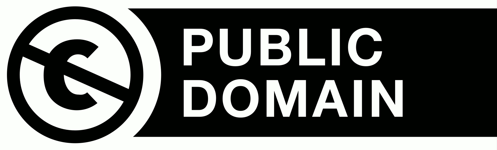

IF or ONLY IF
the logic behind Dependent Arising
Bhikkhu Sunyo, 2025
Introduction
When the Buddha of the early text teaches Dependent Arising, he often uses an underlying principle called ‘conditionality’ (idappaccayatā, which I prefer to translate as ‘dependency’, for reasons that will become clear). He clarifies this principle with four statements:
- Imasmiṃ sati, idaṃ hoti.
- Imass’uppādā, idaṃ uppajjati.
- Imasmiṃ asati, idaṃ na hoti.
- Imassa nirodhā, idaṃ nirujjhati.
I translate these as:
- Only if there is this, will there be that.
- Because this arises, that arises.
- If there isn’t this, there won’t be that.
- When this ceases, that will cease.
This essay focuses on the first statement: “Only if there is this, will there be that.” Most translations of this statement lack “only”. For instance, Venerable Bodhi has: “When this exists, that comes to be.”[1] I will show that this translation causes various problems when it is applied to the specific links of Dependent Arising. These problems all stem from the Buddha inadvertently committing logical fallacies, which are avoided when we include “only”.
This is purely a theoretical issue, not a pragmatic one, so please keep in mind that I approach the matter from a very limited angle here. Actual insights into Dependent Arising are not mere logical theories and are much deeper, and on another level, than the following discussion. I say this because this essay will not appeal to everybody, and the matters discussed here do not need to be understood in order to understand the Dhamma. However, for many Buddhists their first approach to the Dhamma is theoretical, and textual interpretation always has a theoretical side to it, even for the fully enlightened. And on this level the inclusion of “only” can make a meaningful difference.
My explanation relies on some logical principles, which I shall explain first.[2] If this section is too complicated, it can probably be skipped without missing my main message. However, I encourage the interested reader to take it slow and try to understand these matters.
The logic of “if”
Translations of imasmiṃ sati idaṃ hoti such as “when this exists, that comes to be” are sometimes taken to be temporal statements, specifically concerned with the present moment. But the statement describes a more general principle, one that applies across time. The word “when” has the meaning of “if” here.[3] “When this exists, that comes to be” forms a conditional statement.
In logical notation, conditional statements are often written with an arrow symbol, such as this ⭢︎ that. Instead of this and that, the variables P and Q are commonly used:
- P ⭢︎ Q
This can be read aloud as “if P, then Q” (or alternatively as “P implies Q”).
For a concrete example, we best take something outside of Dependent Arising first. So let P = “it is Saturday” and Q = “it is a weekend”. For P ⭢︎ Q we get:
- If it is Saturday, then it is a weekend. (Or, it being Saturday implies it is a weekend.)
The Buddha never meant the principle of dependency to be applied to things such as these, but it serves to illustrate the logic.
From P ⭢︎ Q, we can make two valid inferences:
- P, therefore Q
- not Q, therefore not P
For example, from “if it is Saturday, then it is a weekend”, we can correctly say the following about a given day of the week:
- It is Saturday. Therefore, it is a weekend.
- It is not a weekend. Therefore, it is not Saturday.
These two forms of valid arguments are respectively called modus ponens and modus tollens. (Old terms which have stuck around. They are Latin for “the way of affirmation” and “the way of denial”.)
From P ⭢︎ Q we can also draw two invalid inferences:
- Q, therefore P
- not P, therefore not Q
For example:
- It is a weekend. Therefore, it is Saturday.
- It is not Saturday. Therefore, it is not a weekend.
Both inferences are false, which in this case we can see clearly, because the day in question could also be a Sunday.
These two fallacies are respectively called affirming the consequent and denying the antecedent. The consequent is Q, the antecedent P, which are respectively affirmed and denied in the premise, the part before “therefore”.
These fallacies are surprisingly easy to commit when the topic becomes more abstract. So before we turn to Dependent Arising, to further get the principle across let P = “it rains” and Q = “there are clouds”. For P ⭢︎ Q we get:
- If it rains, there are clouds.
Which of the following inferences are valid and which are not?
- It rains. Therefore, there are clouds.
- There are no clouds. Therefore, there is no rain.
- There are clouds. Therefore, it rains.
- It does not rain. Therefore, there are no clouds.
The first two inferences are valid. They are respectively modus ponens and modus tollens. The last two are invalid. They are respectively affirming the consequent and denying the antecedent.
To foreshadow what’s to come: I will argue that under the standard translations of imasmiṃ sati idaṃ hoti, the Buddha effectively commits the two fallacies. But when “only” is included, he uses the two valid inferences.
We can also say that P ⭢︎ Q signifies that P is a sufficient condition for Q. This means that if we have P, we will always have Q. The occurrence of P is sufficient (is enough) for the occurrence of Q.
In our examples, if it is Saturday, it is always a weekend. So it being Saturday is a sufficient condition for it being a weekend. Likewise, if it rains, there are always clouds. So rain is a sufficient condition for clouds.
A necessary condition, on the other hand, is something that is needed or required for another thing. For example, fuel is a necessary condition for fire, because without fuel, no fire can exist. However, fuel is not a sufficient condition for fire, because fuel can exist without causing a fire.
In P ⭢︎ Q (if P, then Q), the antecedent P is not required for the consequent Q. Logically speaking, Q could also come about through something other than P. For example, it could additionally be the case that R ⭢︎ Q. Therefore, P is not a necessary condition for Q.
In our examples, it being a weekend is not a necessary condition for Saturday, because on Sunday it is a weekend as well. And rain is not a necessary condition for clouds, because there can also be clouds when it does not rain.
To put this in other words, it being a weekend does not depend on it being Saturday, and clouds do not depend on rain. Generally, in “if P, then Q” the consequent Q does not depend on the antecedent P.
My argument for the inclusion of “only” hinges on the distinction between these two types of conditions. What did the Buddha mean by imasmiṃ sati idaṃ hoti? Is this a necessary condition for that, or is this a sufficient condition for that? Put differently, is that dependent on this, or is it not?
The statement imasmiṃ sati idaṃ hoti is sometimes seen as a statement of sufficiency of this for that. This is largely if not solely based on translations that omit “only”.[4] More often, the logical principle behind the statement is correctly understood to be that of necessity, but such translations are left unchallenged.[5] In some cases the statement is even paraphrased with the inclusion of “only” to explain what it means, but when it is translated, “only” is still omitted![6] I think some logical problems are unrecognized or else glossed over, even in the latter case.
The problems with “if”
When imasmiṃ sati idaṃ hoti is translated as “if (or when) this exists, then there will be that”, it indicates that this is a sufficient condition for that. Grammatically this is possible, but it creates conceptual problems when applied to Dependent Arising. (By “Dependent Arising” I specifically mean the Buddha’s teachings on the origination of suffering, not the general principle of dependency that underlies it.)[7]
The most common exposition of Dependent Arising has twelve factors:
| Pali | Translated here as | Also known as | |
|---|---|---|---|
| 1 | Avijjā | Ignorance | |
| 2 | Saṅkhārā | Willful actions | Formations |
| 3 | Viññāṇa | Consciousness | |
| 4 | Nāmarūpa | Immaterial aspects and body | Name and form |
| 5 | Saḷāyatana | The six senses | The six sense bases |
| 6 | Phassa | Sense impression | Contact |
| 7 | Vedanā | Sensation | Feeling |
| 8 | Taṇhā | Craving | |
| 9 | Upādāna | Taking up (also means ‘fuel’) | Grasping/clinging |
| 10 | Bhava | Existence | Becoming |
| 11 | Jāti | Birth | |
| 12 | Jarāmaraṇa | Old age and death |
The Buddha links each subsequent factor with the preceding one: he links old age and death to birth; birth to existence; and so forth until ignorance. In doing so, he uses the principle of dependency with its four statements.
With all that in place, I can now illustrate some of the problems that arise when the first statement is translated with “if” instead of “only if”. For sake of argument, I treat the links in a mixed order and combine some of them together.
- “If there are sensations, there will be craving.” Remember, this means that if there are sensations, there will always be craving. Sensations would be a sufficient condition for craving. This is incorrect, because enlightened beings still experience sensations, but they have no more craving.[8] Also, even before enlightenment there can be sensations without craving, like in deep states of meditation.
- “If there is birth, there will be old age and death.” Birth does always leads to death, indeed. But since it is possible to die young, it does not always lead to old age[9] (which is defined as having gray hear, wrinkled skin, etc.)[10]
- “If there is craving and consequent taking up, there will be a continuation of existence and consequent birth.” This is false, since you may have craving today but get enlightened tomorrow, after which you will not be reborn. So not all craving is sufficient for rebirth.[11] Even existence is not a sufficient condition for birth. An enlightened being is still in a state of existence but does not get reborn.[12] Also, according to one discourse there are non-returners who will still obtain existence but not rebirth.[13] They get fully extinguished in “the in-between”, meaning after death but before taking a proper birth. So for them too, existence is not sufficient for birth.
- “If there is ignorance and consequent willful actions, there will be consciousness.” The reasoning of the previous point applies here as well.[14] If ignorance always leads to the rearising of consciousness—which means, if ignorance is a sufficient condition for rebirth—then enlightened beings would also get reborn, since they also had ignorance earlier in life.
- “If there is consciousness, there will be the immaterial aspects and body (nāmarūpa); and if there are the immaterial aspects and body, there will be consciousness.” The mutual conditioning between these two factors is not part of the standard twelvefold exposition, but it is mentioned in a handful of discourses.[15] With this translation, the two factors would keep each other going, being mutually sufficient. No other factors would be required for their continuance. Even if there were no ignorance and willful actions, consciousness would still lead to nāmarūpa and nāmarūpa to consciousness. It should also be noted that whenever their mutual conditioning is mentioned, the prior factors of ignorance and willful actions are not included in the analysis. Instead of ignorance, nāmarūpa and consciousness are at the base of the chain of factors. If they were sufficient conditions, this would be problematic, because then they would inadvertently set off the rest of the chain including further birth. But even enlightened beings still have consciousness and nāmarūpa.
- “If there are the six senses, there will be sense impressions and consequent sensations.” Usually this is the case, but not always. During the attainment of cessation (saññāvedayitanirodha), there are still sense faculties, yet no sensations.[16] One discourse also says: “If the internal sense of sight is intact, but no external sight comes within its scope, and there is no corresponding engagement there, then the corresponding section of consciousness [and hence sensation] does not arise.”[17] This is repeated for the other five senses. So there can be the six senses, yet no sensations. This means the senses are not sufficient for sensations. (Not in every moment, at least. One can argue that the six senses will eventually always lead to sensations. But that argument would be more complicated than simply including “only”, which avoids the problem in the first place, as we’ll see.)
- “If there is ignorance, there will be willful actions.” It is implied that the willful actions are always deluded ones. I think ignorance is indeed sufficient for such actions, so this statement is not wrong in itself. However, this translation technically allows for completely different sufficient conditions to also lead to willful actions. Logically, we could accept the statement and still say: “If there is no ignorance, there will also be willful actions.” This is clearly not the Buddha’s idea when he says willful actions are dependent on ignorance.
The last problem applies to all other links as well. In each case, different sufficient conditions could lead to the same result.[18] Let’s take “If there is birth, there will be old age and death.” This does not prevent anyone from concluding: “If there is no birth, there will still be old age and death.” Of course, this conclusion makes little sense in real life, but I’m just pointing out the logical issue with the standard translation. It may be more relevant in the statement: “If there is existence [continuing from a past life], there will be birth.” Materialists would argue that there is birth if there is no continuation from a prior existence. In doing so, they would, logically speaking, not contradict the Buddha’s statement, when translated without “only”. Yet, one purpose of Dependent Arising is precisely to counter the materialistic worldview. It is one of the “extremes” that Dependent Arising avoids.[19] So we can expect the Buddha to phrase things in a way that leaves no room for the materialists.
For these examples, I adopted the common multiple-lifetime interpretation of Dependent Arising, which I explained in depth elsewhere.[20] The specific interpretation of the links is irrelevant to my main point, however. Similar issues will exist for other interpretations. What I’m getting is the translation of imasmiṃ sati idaṃ hoti, not the interpretation of the links.
The examples I gave are all just symptoms of a deeper problem. The standard translation that omits “only” inadvertently leads the Buddha to make fundamental logical fallacies. This can be illustrated with any of the links, but when the Buddha explained his own insights into Dependent Arising, he often started at old age and death. This is also one of the links that is easiest to understand, so let us start there as well. For a translation without “only”, the first step in the Buddha’s analysis would be as follows:
I thought: “There will be old age and death, if there is what? What do old age and death depend on?” Then, by attending properly, I comprehended it, understanding that there will be old age and death, if there is birth. Old age and death depend on birth.[21]
From this analysis, the Buddha derives the existence of birth. By this I mean, he does not simply conclude that old age and death depend on birth. He also concludes that, since there in fact is old age and death, there must be birth. That is to say, there must be a birth preceding all old age and death. This conclusion is rather trivial in this case, but the Buddha does the same for all other links, working his way back to ignorance. He concludes that, since there is birth, there must have been prior existence, and so forth until ignorance.
We can phrase the logical reasoning as follows, with the usual translation that omits “only”:
- If there is birth, there will be old age and death.
- There is old age and death.
- Therefore, there is (or was) birth.
This argument may seem valid, because its premises and conclusion appear correct. (Although the first premise is actually false, since birth does not always lead to old age.) However, an argument can be invalid even if its premises and conclusion are correct. In this case, the Buddha commits the logical fallacy of affirming the consequent. It’s like saying:
- If it is Saturday, it is a weekend.
- It is a weekend.
- Therefore, it is Saturday.
Today may indeed be Saturday, in which case it would also be a weekend. The premises and conclusion would be correct. But the argument is still fallacious, since the premises do not necessarily lead to the conclusion. Logically, it could also be Sunday.
We encounter similar logical problems in the analysis of the cessation sequence. From the dependency of old age and death on birth, the Buddha concludes: “If there is no birth, there will be no old age and death.” This conclusion is correct by itself. However, to derive it from the usual translation of the origination statement is to commit the fallacy of denying the antecedent:
- If there is birth, there will be old age and death.
- There is no (future) birth.
- Therefore, there will be no (future) old age and death.
This is like forgetting about Sunday again:
- If it is Saturday, it is a weekend.
- It is not Saturday.
- Therefore, it is not a weekend.
Did the Buddha really commit such basic logical fallacies? I do not think so.
The logic of “only if”
Luckily, the problem can be remedied very easily. We can take imasmiṃ sati idaṃ hoti to be a statement of necessity instead of sufficiency. Necessity is what the entire principle behind Dependent Arising amounts to in the first place. If something depends on another thing, it means that it is necessary for it. It does not a mean that it is always sufficient for it.
Daily-life uses of the word ‘dependent’ (paṭicca) illustrate this as well. For example, it is said that the body is dependent on food and will die without it.[22] Food is not a sufficient condition for the body’s continuance; it is just a necessary condition for it. Otherwise people who eat would never die. In context of Dependent Arising itself, it is said that fire is dependent on fuel.[23] Fuel is necessary for fire, but not sufficient. Other conditions, like oxygen and heat, also need to be present. Another discourse likewise says that the burning of an oil lamp is dependent on (paṭicca) oil and a wick.[24]
In order to convey the idea of necessity, we should translate imasmiṃ sati idaṃ hoti as “only if there is this, will there be that”. The addition of the single word “only” completely changes the meaning. Suppose I say, “If it is cold, it snows.” This means it always snows whenever it is cold. But if I say, “Only if it is cold, it snows”, then it just means that it needs to be cold in order for it to snow.
I suggest to translate the Buddha’s analysis as follows:
I thought: “There will be old age and death, only if there is what? What do old age and death depend on?” Then, by attending properly, I comprehended it, understanding that there will be old age and death, only if there is birth. Old age and death depend on birth.
When such a translation is applied to all the links, the earlier problems disappear:
- “Only if there are sensations, will there be craving.” While this is perhaps a superfluous statement in and of itself,[25] it is correct. When we don’t experience anything, we also cannot crave anything.
- “Only if there is birth, will there be old age and death.” Indeed, only when we are born, can we get old and die. We may die young, but if we do get old, then it only happens because we were born.
- “Only if there is craving and consequent taking up, will there be a continuation of existence and hence birth.” With the inclusion of “only” it is no longer the case that all craving leads to rebirth, even craving just before enlightenment. Instead, now craving is just a requirement for rebirth to happen after death. So even if you have craving today, you will still not get reborn if you abandon it tomorrow.
- “Only if there is ignorance and consequent willful actions, will there be consciousness (rearising in a next life).” The idea is the same as the previous point. You only get reborn if there is ignorance, not when there is no ignorance.
- “Only if there is consciousness, will there be the immaterial aspects and body; and only if there are the immaterial aspects and body, will there be consciousness.” Now these two factors are no longer self-sufficient. There is room for ignorance and willful actions to also be required for their continuance. This mutual dependency between the two factors is illustrated with a simile of two bundles of reeds that lean against one another.[26] The idea is that one bundle can stand only if the other stands; not that if one stands, the other also stands automatically. One bundle standing is not sufficient for the other to stand, but it is necessary. The commentaries call this ‘mutual dependency’ (or ‘interdependence’, aññamañña-paccayatā).
- “Only if there are the six senses, will there be sense impressions and consequent sensations.” This is correct. If there are no senses, we cannot experience any sensations.
- “Only if there is ignorance, will there be willful actions.” With this translation there can no longer be different conditions that also lead to willful actions. If willful actions happen only if there is ignorance, logically they cannot also happen when there is no ignorance.
The last principle applies to all other links as well. Because all are phrased as necessary conditions, there can be no other, independent conditions that lead to the same results. For example, “only if there is existence [continuing from a past life], will there be birth” leaves no room for anybody to say: “If there is no existence [continuing from a past life], there is also birth.”
The principle of necessity must be what the Buddha had in mind. If not, it would defeat the entire purpose of the origination sequence. Then there could logically be numerous independent conditions that result in any of the twelve factors, so that in the end, suffering could arise from something other than ignorance.
In sum, the inclusion of “only” creates a statement of necessity rather than sufficiency. Two problems are thereby avoided: the preceding factors of Dependent Arising no longer always lead to the subsequent ones; and there can no longer be other, independent factors that lead to the same results.
In essence, that is all I wish to get across. But for sake of comprehensiveness, we can return to the logical principles of modus ponens and modus tollens. With the translation “only if”, the Buddha actually uses these two valid inferences. In order to explain this, I have to introduce another logical principle, which says that sufficiency and necessity are dual to one another. That is to say, if P is a sufficient condition for Q, then Q is a necessary condition for P.
In logical notation, we can simply turn things around:
- P ⭢︎ Q
- Q ⭠︎ P
We can read this as:
- if P, then Q
- only if Q, then P
Because of this equivalence, the statement P ⭢︎ Q itself is also read aloud as “P only if Q”. Logically, this means the exact same as “if P, then Q” and “P implies Q”.[27]
This principle can be unintuitive in the abstract, so let’s apply it to our examples. “If it rains, there are clouds” is logically equivalent to “it rains only if there are clouds”. And “if it is Saturday, it is a weekend” is equivalent to “it is Saturday only if it is a weekend”. In each case, the transformed “only if” statements are clearly true. Logically, they convey the same information as the original “if” statements.
The same applies to Dependent Arising. We can rephrase “only if there is birth, will there be old age and death” as “if there is old age and death, there (earlier) was birth”. The Buddha doesn’t literally say this in the suttas, but with this transformation, it is more apparent how the logic behind the origination sequence is effectively a modus ponens:
- If there is old age and death, there was birth.
- There is old age and death.
- Therefore, there was (earlier) birth.
The idea is more general than current old age & death and earlier birth. It applies to old age & death and birth in general, across time. But the basic logic for the general case would be the same.
The same logic also applies to all the following links. In full, the Buddha’s analysis of origination can be written as follows:
- old age and death ⭢︎ birth ⭢︎ existence ⭢︎ taking up ⭢︎ craving ⭢︎ sensations ⭢︎ sense impressions ⭢︎ six senses ⭢︎ immaterial aspects and body ⭢︎ consciousness ⭢︎ willful actions ⭢︎ ignorance
This analysis starts at old age and death and works its way back to ignorance. But because of the equivalence of P ⭢︎ Q and Q ⭠︎ P, we can turn the order around:
- ignorance ⭠︎ willful actions ⭠︎ consciousness ⭠︎ immaterial aspects and body ⭠︎ six senses ⭠︎ sense impressions ⭠︎ sensations ⭠︎ craving ⭠︎ taking up ⭠︎ existence ⭠︎ birth ⭠︎ old age and death
The arrows here probably point the other way than you would have expected. But try not to think of them as indicating the direction of causality. A certain causality is implied, but it is not indicated by the direction of the arrows. Again, in logical notation Q ⭠︎ P just means “only if Q, then P”. This logic could also apply to things like weekends and Saturdays, where there is no meaningful causal connection between the two. So the above sequence is simply saying: “Only if there is ignorance, will there be willful actions. [And so on until:] Only if there is birth, will there be old age and death.”
Instead of saying “only if Q, then P”, we can also say “dependent on Q, is P” (or “P depends on Q”). This is just another way to convey the same necessary condition. For example, “only if there are clouds, it rains” means the same as “dependent on clouds, is rain”. Because of this, the Buddha usually summarized the origination sequence as follows:
Dependent on ignorance, there are willful actions. (Avijjāpaccayā sankhārā.) Dependent on willful actions, consciousness. Dependent on consciousness, the immaterial aspects and body. Dependent on the immaterial aspects and body, the six senses. Dependent on the six senses, sense impressions. Dependent on sense impressions, sensations. Dependent on sensations, craving. Dependent on craving, taking up. Dependent on taking up, existence. Dependent on existence, birth. And dependent on birth, old age and death, and sorrow, grief, pain, sadness, and distress come to be.
Now for the cessation sequence. Remember that “only if there is birth, will there be old age and death” is equivalent to “if there is old age and death, there (earlier) was birth”. Since the latter has the form P ⭢︎ Q, we can apply modus tollens to it. The Buddha’s realization of his ending of future old age and death is, logically speaking, based on this principle:
- If there is to be more old age and death, there must be more birth.
- There will be no more birth.
- Therefore, there will be no more old age and death.
Combining the last two points, the Buddha says: “If there is no birth, there will be no old age and death.”
We can also put this as, “no birth ⭢︎ no old age and death”. And we can do the same for all preceding links:
- no ignorance ⭢︎ no willful actions ⭢︎ no consciousness ⭢︎ no immaterial aspects and body ⭢︎ no six senses ⭢︎ no sense impressions ⭢︎ no sensations ⭢︎ no craving ⭢︎ no taking up ⭢︎ no existence ⭢︎ no birth ⭢︎ no old age and death
The Buddha therefore summarized:
When ignorance completely fades away and ceases, willful actions will cease. When willful actions cease, consciousness will cease. When consciousness ceases, the immaterial aspects and body will cease. When the immaterial aspects and body cease, the six senses will cease. When the six senses cease, sense impressions will cease. When sense impressions cease, sensations will cease. When sensations cease, craving will cease. When craving ceases, taking up will cease. When taking up ceases, existence will cease. When existence ceases, birth will cease. And when birth ceases, old age and death, and sorrow, grief, pain, sadness, and distress, will cease.
As a last logical step, we can also combine all the link together. There is a logical principle called the hypothetical syllogism, which says: “If P implies Q, and Q implies R, then P implies R.” This lets us skip over the immediate factor Q and jump right from P to R:
- P ⭢︎ Q
- Q ⭢︎ R
- Therefore, P ⭢︎ R
This principle is quite intuitive in real life. To expand our examples:
- If it is the day after Friday, it is Saturday.
- If it is Saturday, it is a weekend.
- Therefore, if it is the day after Friday, it is a weekend.
- If the streams start flowing, it rains.
- If it rains, there are clouds.
- Therefore, if the streams start flowing, there are clouds.
We are not limited to skipping just one single step. In case of Dependent Arising, we can skip straight from old age and death to ignorance:
- old age and death ⭢︎ birth
- birth ⭢︎ existence
- [and so on until:]
- willful actions ⭢︎ ignorance
- Therefore, old age and death ⭢︎ ignorance
To put this conclusion in ordinary language: “There will be (future) old age and death, only if there is ignorance.” This is what the Buddha concluded as well:
Whatever suffering may originate, it all depends on ignorance. […] Those who journey again and again, transmigrating through births and deaths, going from one state of existence to another: their destinations are just due to ignorance.[28]
By virtue of modus tollens, we can now conclude: “If there is no ignorance, there will be no old age and death.” This is, of course, the entire idea of the twelvefold sequence of Dependent Arising:
When ignorance completely fades away and ceases, suffering will no longer originate. […] Ignorance is indeed the great delusion because of which we have long transmigrated. But beings who have attained knowledge, do not go on to a next life.[29]
Few Buddhists would disagree with this conclusion. But my point is, with the usual translation of imasmiṃ sati idaṃ hoti, none of this logically works. We have to include “only”.
Translating as “only if”
One important question remains to be answered. Is it linguistically possible to translate imasmiṃ sati idaṃ hoti as “only if there is this, will there be that”?
In short, yes. The clause imasmiṃ sati is a locative absolute, which Wijesekera explains can “signify a condition that exists or should exist for the fulfillment of the main action, which may be rendered by such expressions as ‘if, on condition, provided that’ etc.”[30] By “a condition that exists or should exist”, Wijesekera means the locative absolute can signify a sufficient or necessary condition. The latter can be indicated with “provided that”, as Wijesekera suggests, but also with “only if”.
The root issue is that the distinction between the English “if” and “only if” does not exist in Pali.[31] The locative absolute can mean either, depending on context. However, the context of Dependent Arising requires the latter. It requires imasmiṃ sati to indicate a necessary condition. As Jayatilleke also concluded: “B does not occur unless A is present and occurs only when A is present.”[32]
The astute reader may wonder whether the negative statement—imasmiṃ asati idaṃ na hoti—should also be translated with “only”. But here the inclusion of “only” would be a mistake.
The principle of contraposition (which is closely related to modus tollens) allows us to make an immediate inference from P ⭢︎ Q (i.e. from Q ⭠︎ P), namely:
- Q ⭠︎ P
- therefore, no Q ⭢︎ no P
For example:
- Only if there are clouds, there is rain.
- Therefore, if there are no clouds, there is no rain.
If we instead concluded, “only if there are no clouds, there is no rain”, we would again omit the possibility of rainless yet cloudy days.
In case of Dependent Arising, we can say:
- Only if there is birth, will there be old age and death.
- Therefore, if there is no birth, there will be no old age and death.
Again, this inference would not be valid for translations that omit “only” from the first statement. From “if there is birth, there will be old age and death” we cannot infer “if there is no birth, there will be no old age and death”. This would be confusing sufficiency and necessity, which I don’t think the Buddha was doing.
The logic of “because”
If imasmiṃ sati idaṃ hoti is about necessity, then so should be the second statement of dependency: imassa uppādā idaṃ uppajjati, “because this arises, that arises”. If we construct an analogous statement for our example, we see that this is indeed the case:
- Because clouds form, rain happens.
This does not mean that clouds are a sufficient condition for rain, that it always rains when there are clouds. It means that rain only happens because there is a formation of clouds. The occurrence of rain depends on the occurrence of clouds.
As for Dependent Arising:
- Because birth arises, old age and death arise.
This means old age and death happen only because birth happened first. So this is again a statement of necessity, not sufficiency.
Causality and “only if”
The term idappaccayatā has also been translated as ‘conditionality’. This is fine, but I prefer ‘dependency’, partly because ‘conditionality’ could imply both sufficient and necessary conditions. Dependent Arising is primarily concerned with the latter, which I feel is better reflected by ‘dependency’. In addition, this translation preserves the linguistic connection with ‘Dependent Arising’ (paṭicca-samuppāda). The words paccaya and paṭicca both come from the verb pacceti, meaning ‘to fall back on, to depend on’.
Idappaccayatā has also been translated as ‘causality’. However, Venerable Payutto argues: “Although the twelve factors […] act as conditions for one another, this is not the same as saying they are ‘causes’ for one another.”[33] I think the term ‘cause’ is acceptable, as long as we limit what we mean by this.[34] Gokhale explains: “The concept of cause in the West is generally understood as the sufficient condition of the effect, whereas in Indian philosophical discussions, it is generally understood as a necessary condition.”[35] In the so-called West, a cause is generally considered to be a thing which actively produces its effect. A cause of death would for example be a heart attack. It wouldn’t be birth.[36] But when the Buddha says birth is a cause of death, he simply means that birth is necessary for death. Birth causes death in the sense that death couldn’t happen without it.
This knowledge provides important context for passages like this:
“Ānanda, I said old age and death depend on birth, which is to be understood as follows: If there were completely and utterly no birth at all, not of anyone anywhere […] not of any beings into any state. Then, with the total absence and cessation of birth, would old age and death occur?”
“No, sir.”
“Therefore, birth is a cause, source, origin, and condition for old age and death.”[37]
Here the Buddha effectively applies the principle of contraposition:
- If there is no birth, there is no old age and death.
- Therefore, old age and death depend on birth.
- (I.e., only if there is birth, will there be old age and death.)
The Buddha says birth is a condition (paccaya) for death, by which he means it is a necessary condition. The word paccaya also means ‘requirement’, such as when it is used for the requisites of a monastic, specifically medicines.[38] Medicines alone are not sufficient for a monastic to survive, but for a sick one they would be necessary. Furthermore, one discourse speaks of certain defilements that arise “with form as a condition” (or “dependent on form”, rūpa-paccayā).[39] This must also indicate a necessary condition rather than a sufficient one, because form by itself does not cause any defilements.
The Buddha also says birth is cause (hetu) for death. Considering modern conceptions of causality, ‘cause’ can be a misleading translation in this context, so in earlier translations I avoided it.[40] But the translation is workable once the reader realizes that causality has been conceived of in various ways throughout the centuries. Aristotle for example talked about four types of causes, one of which is the material a thing is made of. To Aristotle, clay is a cause for a pot. The ancient Indians also had a different conception of causality than most of us do nowadays. To them, necessary conditions are also causes.
The Nyāya Sutra Bhāshya by Vātsyāyana is a Hindu text, which displays these ideas perfectly. One passage discusses different types of inference. In illustrating one type, the text says that the conclusion “it rains (only) if there are clouds” can be inferred from the knowledge that it never rains when there are no clouds. (This knowledge literally is, “if there are no clouds, there is no rain”, asatsu megheṣu vṛṣṭir na bhavati, which has the exact same grammatical structure as the Buddha’s statements of dependency.) A hypothetical opponent then replies that the conclusion is invalid, since “sometimes there are clouds, but there is no rain”. Vātsyāyana replies that the opponent misunderstands the conclusion. The knowledge that it never rains when there are no clouds leads to the conclusion that “clouds are a necessary condition for rain. Of course clouds are not a sufficient condition for rain; that is the way with causal factors.”[41]
Firstly, this confirms how “causal factors” were understood in India at the time. Causes were primarily necessary conditions. (The text has been dated anywhere between 200 BCE and 400 CE.)
Secondly, the opponent must have understood Vātsyāyana to have concluded “there is rain if there are clouds”. As we discussed, this would mean clouds are a sufficient condition for rain, which indeed wouldn’t allow for times when there are clouds but no rain. And to derive this conclusion from “if there are no clouds, there is no rain” would be invalid. So the opponent’s critique would be correct.
However, Vātsyāyana actually meant “there is rain only if there are clouds”, in which case clouds are just a necessary condition for rain. It is hard to convey in English translations, but the opponent’s confusion is understandable. The Sanskrit statement has a similar locative absolute as the Pali imasmiṃ sati.[42] The difference between “if” and “only if” does not exist here either. It is therefore the context, not the grammar, which determines whether we are dealing with sufficient or necessary conditions. It seems Vātsyāyana set up his hypothetical opponent precisely to make this point, the same point I have tried to make in this essay.
Closing thoughts
The reader may wonder, does all of this really matter? Admittedly, in a deep sense, no. I don’t think anybody will be deprived of real insights into Dependent Arising just because a translator chose “if” over “only if”. These insights come from meditation, not from technical analysis such as the above. We can even misunderstand the Buddha’s words in theory, yet still understand Dependent Arising in practice, and vice-versa.
However, I would not have written this essay if I thought the translation did not matter at all. I have seen textual explanations of Dependent Arising go awry by taking imasmiṃ sati as indicating sufficient conditions. But when seen as necessary conditions, the whole teaching becomes a more unified whole. By including “only”, the origination and cessation sequences convey the exact same dependencies. They are logically equivalent; or in technical terms, are contrapositions of one another. This shows the simplicity, and yet brilliancy, of the Buddha’s teaching. To me, that worthwhile in its own right.
Lastly, two other ways to solve the problems have been suggested, both of which conserve the sufficient conditionality of this for that in imasmiṃ sati idaṃ hoti. The first suggestion is that each factor in the origination sequence is not only a sufficient condition for the following one, but also necessary condition. This means we should translate the statement as “there will be this, if and only if there is that”. The second suggestion is that the links in the origination sequence all assume the existence of ignorance. For example, when the Buddha says “if there are sensations, there will be craving”, he really means “if there are sensations and ignorance, there will be craving”.[43]
Both suggestions solve some of the problems, but far from all. They also create problems of their own. For sake of brevity, I will not explain why this is the case here. Nevertheless, even if these alternatives did not have their own problems, I think my suggestion is still considerably more simple and therefore preferable.
I hope future translators will agree and consider the inclusion of “only”.
Notes
Although I do have some formal training in mathematical logic, I am not a logician. For more extensive explanations see for example Delancey, especially p.28–29. ↩︎
Compare Duroiselle §603iii: “Sati […] may also often be translated by ‘if, such being the case’.” Wijesekera §184: “The temporal notion is not the only idea expressed by the loc[ative] absolute. […] It may also signify a condition that exists or should exist for the fulfillment of the main action, which may be rendered by such expressions as ‘if, on condition, provided that’ etc.” ↩︎
For example Griffiths p.31: “For the occurrence of any given event Y, there exists a necessary and sufficient condition X.” Reat p.21: “The term [paṭiccasamuppāda] may properly be applied to any set of results dependent upon necessary and sufficient conditions.” Brahmavamso: “The sufficient condition is expressed by the first half of idappaccayatā.” ↩︎
For example Sujato p.89: “The first pair of principles [i.e. the first two statements of idappaccayatā] appears to imply sufficient conditionality. If something exists, another thing comes to be. However, a close contextual examination reveals that this is not so. [D]ependent origination is primarily necessary conditionality.” Harvey p.65 (quoted by Sangiacomo p.16): “The ‘that’ of the abstract formula is not a single determining cause but a major condition, one of several. It is clear that a nidāna is seen as a necessary condition for that which it conditions, but not as a necessary and sufficient condition.” Gethin p.153: “Although the formula states just one condition for each subsequent link, this should not be taken as suggesting that a single cause is a sufficient condition for the arising of each further link.” Brasington p.26: “Dependent origination is a teaching about necessary conditions.” Ronkin p.206: “If y arose, then x had necessarily been present.” Hamilton p.214 (quoted by Ronkin p.207): “If there is a b, then there must have been an a.” Brahmavamso: “Only some of the first 11 factors are a sufficient condition for the factor following.” Cintita p.222: “Each link represents a necessary condition—though in general not a sufficient condition—for the link that follows.” Jones 2022 p.135: “To understand each of these conditionally-arisen phenomena as necessary and sometimes sufficient conditions for the arising of the next in the sequence allows for interpretations that are truer to the teachings [compared to when seen as a causal (and sufficient) sequence].” ↩︎
Jayatilleke p.449 paraphrases imasmiṃ sati idaṃ hoti as “B […] occurs only when A is present” but still translates it as “whenever A is present, B is present”. Similarly, Sangiacomo p.16 paraphrases “only when this is present, then that is” but still translates “when this is, that is”. ↩︎
Compare the Buddha’s definition of Dependent Arising in SN 12.1. ↩︎
In the Abhidharmakośabhāṣya, Vasumitra already makes this argument to disprove sufficiency in the links; see De La Vallée Poussin p.231 and Griffiths p.69. Also making it for the same reason are Brahmavamso, Sujato p.89, Harvey p.65 (quoted by Sangiacomo p.16), and Jones 2022 p.138. ↩︎
Compare Sujato p.90: “Quite clearly, birth is a necessary condition for aging & death. It is true that birth is also a sufficient condition for death; however it is not a sufficient condition for aging (because a being who has been newly born might die immediately before aging).” ↩︎
See also Brahmavamso. ↩︎
See also Brahmavamso. ↩︎
See also Sujato p.88: “If in the thought-world of the suttas ‘x is a condition for y’ means ‘x is a sufficient condition for y’, this leaves open the question whether other things may also be sufficient.” ↩︎
See for example Karunadasa. ↩︎
Notice that the cessation statement “if sensations cease, craving ceases” is also rather superfluous. Like other authors, I suspect the link between sensations and craving is somewhat artificial because at this point two shorter sequences were linked together. For a further discussion see Sunyo Ch.2. ↩︎
Wijesekera §184 ↩︎
Compare Delancey p.28: “An oddity of English is that the word ‘only’ changes the meaning of ‘if’.” ↩︎
Jayatilleke p.449, emphasis added ↩︎
Compare Sangiacomo p.7: “The teaching of conditioned co-origination is often presented as a teaching about ‘causation’, although it is also often noted that this causal interpretation can be problematic if it is not sufficiently nuanced.” ↩︎
Compare Jones 2011 p.27–28. ↩︎
For example in gilānappaccaya (MN 2) or catumāsappaccaya (Bhikkhu Pācittiya 47). ↩︎
In Sunyo I translated hetu as ‘condition’, with paccaya as ‘requirement’. Compare Ronkin p.98 and p.207: “In the Nikāyas […] hetu and paccaya are regarded as synonymous. […] Paccaya has a wide range of meaning: it signifies ‘support’, ‘requisite’, ‘means’, ‘reason’, ‘grounds’, ‘cause’ and ‘condition’. Hetu is less laden a term, primarily denoting ‘cause’, ‘reason’ and ‘condition’.” ↩︎
Nyāya Sutra Bhāshya 2.2.3–2.2.4. Paraphrase by Potter p.254, emphasis added. For a complete translation see Jhā p.197–198. ↩︎
It uses satsu, Sanskrit of Pali santesu, which is plural of sati. ↩︎
This is also Ghoṣaka’s counter to Vasumitra in the Abhidharmakośabhāṣya; see De La Vallée Poussin p.231 and Griffiths p.70. ↩︎
References
- Bodhi
- The Connected Discourses of the Buddha: a new translation of the Saṃyutta Nikāya, Bhikkhu Bodhi (tr.), 2000.
- Brahmavamso
- Dependent Origination, Ajahn Brahmavamso, 2002.
- Brasington
- Dependent Origination and Emptiness, Leigh Brasington, 2021.
- Cintita
- Buddhist Life/Buddhist Path: the foundations of Buddhism based on earliest sources, Bhikkhu Cintita, 2017.
- De La Vallée Poussin
- Abhidharmakośabhāṣyam of Vasubandhu (tr. Leo M. Pruden), Louis de La Vallée Poussin (tr.), 1991.
- Delancey
- A Concise Introduction to Logic, Craig Delancey, 2017.
- Duroiselle
- A Practical Grammar of the Pāli Language. Fourth Edition, revision 3 (ed. Eizel), Charles Duroiselle, 1906/2007.
- Gethin
- The Foundations of Buddhism, Rupert Gethin, 1998.
- Gokhale
- Lokāyata/Cārvāka: a philosophical inquiry, Pradeep P. Gokhale, 2015.
- Griffiths
- On Being Mindless: Buddhist meditation and the mind-body problem, Paul J. Griffiths, 1986.
- Hamilton
- Early Buddhism: a new approach, Sue Hamilton, 2000.
- Harvey
- ‘The Conditioned Co-arising of Mental and Bodily Processes within Life and Between Lives’ in A Companion to Buddhist Philosophy pp.46–68 (ed. S.M. Emmanuel), Peter Harvey, 2013.
- Jayatilleke
- Early Buddhist Theory of Knowledge, K.N. Jayatilleke, 1963.
- Jhā
- Gautama's Nyāyasūtras, with Vātsyāyana-bhāṣya, Gaṅgānātha Jhā, 1939.
- Jones 2011
- This Being, That Becomes: the Buddha’s teaching on conditionality, Dhivan Thomas Jones, 2011.
- Jones 2022
- ‘This Being, That Becomes’ in Journal of the International Association of Buddhist Studies vol.45 pp.119–155, Dhivan Thomas Jones, 2022.
- Karunadasa
- ‘The Buddhist Critique of Sassatavada and Ucchedavada: the key to a proper understanding of the origin and the doctrines of early Buddhism’ in The Middle Way vol.74, Y. Karunadasa, 1999.
- Payutto
- Buddhadhamma: the laws of nature and their benefits to life (tr. R.P. Moore), P.A. Payutto, 2021.
- Potter
- Encyclopedia of Indian Philosophies vol.2: Indian Metaphysics and Epistemology—the tradition of Nyaya-Vaisesika up to Gangesa, Karl H. Potter (ed.), 1977.
- Reat
- ‘Some Fundamental Concepts of Buddhist Psychology’ in Religion vol.17, Noble Ross Reat, 1987.
- Ronkin
- Early Buddhist Metaphysics: the making of a philosophical tradition, Noa Ronkin, 2005.
- Sangiacomo
- ‘Conditionality (idappaccayatā) in the Pāli Discourses of the Buddha’ in Philosophies vol.10, Andrea Sangiacomo, 2025.
- Sujato
- A Swift Pair of Messengers, Bhikkhu Sujato, 2012.
- Sunyo
- Seeds, Paintings and a Beam of Light: similes for Dependent Arising, Bhikkhu Sunyo, 2024.
- Wijesekera
- Syntax of the Cases in the Pali Nikayas, O.H. de A. Wijesekera, 1993.
Abbreviations
- AN
- Aṅguttara Nikāya
- DN
- Dīgha Nikāya
- Iti
- Itivuttaka
- MN
- Majjhima Nikāya
- SN
- Saṃyutta Nikāya
- Snp
- Sutta Nipāta
Colophon
First published in 2025.

To the extent possible under law, Bhikkhu Sunyo has waived all copyright and related or neighboring rights to this work. You may copy, modify, and distribute this work in any shape or form, without asking permission. Full license at creativecommons.org.